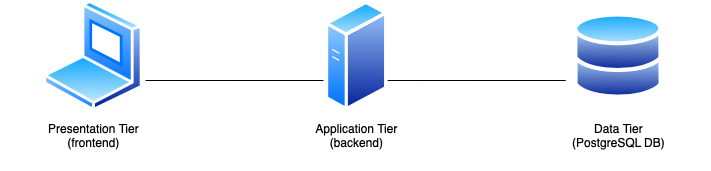
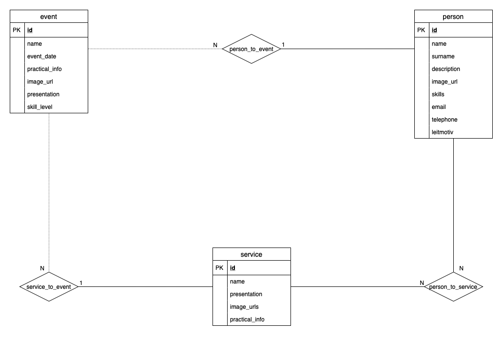
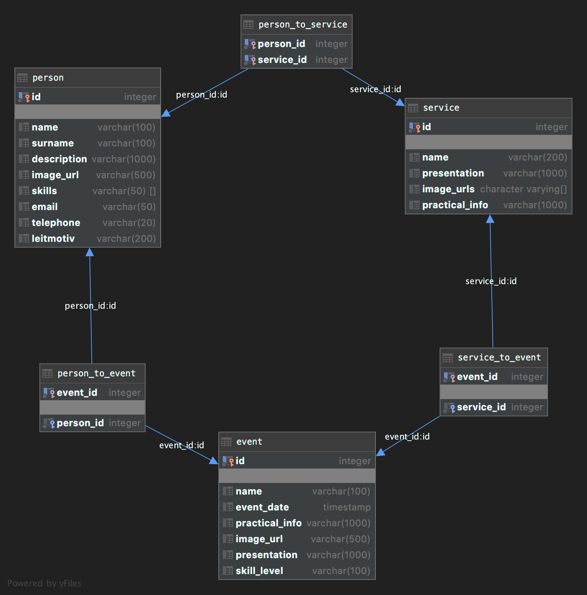

Documentation of the Backend part
Deliverable D1
| Member n. |
Role |
First name |
Last Name |
Matricola |
Email address |
| 1 |
administrator |
Francesco |
Peressini |
10523034 |
francesco.peressini@mail.polimi.it |
| 2 |
member |
Stefano |
Martina |
10503949 |
stefano.martina@mail.polimi.it |
| 3 |
member |
Tommaso |
Peresson |
10526013 |
tommaso.peresson@mail.polimi.it |
Links to other deliverables
- Deliverable D0: the web application is accessible at this
address.
- Deliverable D2: the YAML or JSON file containing the specification of the app
API can be found at this
address.
- Deliverable D3: the SwaggerUI page of the same API is available at
this address.
- Deliverable D4: the source code of D0 is available as a zip file at
this address.
- Deliverable D5: the address of the online source control repository is
available this address.
We hereby declare that this
is a private repository and, upon request, we will give access to the
instructors.
Specification
Web Architecture

The web architecture implemented is a three tier one: Presentation, Application and Data layers represent the three
different
actors which interact between them as shown in the picture above.
More in detail, the Presentation layer presents data to the user by rendering HTML pages, both the static and the
dynamic part,
the Application layer interacts with the Presentation and the Data layers respectively responding to the API
requests received
by the client and retrieving data from the database. Finally, the Data layer represents the DBMS, in our case a
PostgreSQL database server.
It is ensured that the HTML is rendered client side (in the Presentation layer) since the HTML pages are rendered
using an API schema.
API
REST compliance
We followed the main architectural constraints that describe a RESTful system:
- Client-server architecture: the client can only interact with the server through its public exposed endpoints;
moreover,
the client and the server are able to work and evolve independently;
- Statelessness: no client information are stored on the server between requests: each request from any client
contains all the information necessary to service the request. No session information are stored to authenticate
the users;
- Cacheability: no caching mechanism has been implemented server side; content caching takes place only via the
browser;
- Code on demand: server only responds to the client's requests through static representation of the data
available in the
database (in the form of JSON files);
- Uniform interface: individual resources are identified in requests: the server sends data from its database as
JSON files without
exposing its internal representation; each message received by the client includes enough information to
describe how to
process the message.
OpenAPI Resource models
- Event: represents a generic event offered by the Association; it contains the ID of the event, its name, date
and time, a short presentation, some practical info, the skill
level required and the url of the associated image;
- Person: represents a member of the Association; it contains the ID of the person, and some personal information
like his/her name, surname, email, telephone,
leitmotiv, skills, a short description and the url of the associated image;
- Service: represents a generic service offered by the Association; it contains the ID of the service, its name,
a short presentation, some practical info, and an array of urls for the associated images;
- Error: represents the generic structure for the errors returned by the server; it contains the response code
(for example 400/404), and a short message to explain what went wrong with the request.
Data model
Below are shown the ER diagram, and the Logical Design of the data layer used in our web application.


Except for the Error model, there is a 1 to 1 correspondence between the Event, Person and Service tables presented
above and
the correspondent OpenAPI resource models.
Implementation
Environment
- Node.js: an open-source, cross-platform, JavaScript runtime environment that executes JavaScript code outside of
a web browser.
- WebStorm: a powerful and intelligent IDE that gives you the best coding assistance for JavaScript,
HTML and CSS and a wide range of modern web technologies. WebStorm is perfectly equipped for complex client-side
development and server-side development with Node.js;
- Database Tools and SQL (WebStorm plugin): a database plugin for IntelliJ-based IDEs providing support for all
the
features available in the standalone IDE for databases, DataGrip. It enables handling information stored in
relational
databases along with SQL language support;
- Swagger Editor: open source editor fully dedicated to OpenAPI-based APIs.The Swagger Editor is an easy way to
get started with the OpenAPI Specification (formerly known as Swagger), with support for Swagger 2.0 and OpenAPI
3.0.
Languages
Frameworks and Libraries
- Knex.js: Knex.js is a "batteries included" SQL query builder for Postgres, MSSQL, MySQL, MariaDB,
SQLite3, Oracle,
and Amazon Redshift designed to be flexible, portable, and fun to use. It features both traditional
node style callbacks as well as a promise interface for cleaner async flow control, a stream interface,
full featured query and schema builders, transaction support (with savepoints), connection pooling and
standardized
responses between different query clients and dialects;
- serve-static: a Node.js library used to serve static content over HTTP.
Discussion
We started building our project from the OpenAPI specification generated by the Swagger Editor tool. During the
development
of the web application, we strictly followed the specification created, and we kept up to date the endpoints in
order to
satisfy some requirements not considered in the initial version of the OpenAPI specification (like, for example, the
error
handling process). We did not modify the structure generated by the Swagger Editor tool and, in particular, we only
manipulated
the code of the Service section of the server. We tested our endpoints through the "Try it out!"
feature offered by the
auto-generated documentation produced by Swagger: the results obtained was compared with the contents of the
database.
As said before, our web application is partitioned in three layers: Presentation, Application and Data.
Static resources such as HTML pages are effectively separated from the Data layer and the information from the
database can
be retrieved by the frontend only through specific API calls to the exposed endpoints.
Concerning the managing of the data model, we used a relational database management system; in particular, we
adopted PostgreSQL.
Task assignment
The workload was divided equally between us:
Francesco Peressini
- Design: formalization of the IDM models, ER schema, wireframes and scenarios. (*)
- Frontend: jQuery scripting to enable dynamic HTML contents.
- Backend: APIs design; development of the assigned APIs and maintained the backend during the whole project;
database
maintenance.
Stefano Martina
- Design: formalization of the IDM models, ER schema, wireframes and scenarios. (*)
- Frontend: designed Homepage, Association, Services, Service, Events by Month pages; implemented shared elements
like
navigation bar and orientation info; jQuery scripting to enable dynamic HTML contents.
- Backend: APIs design.
Tommaso Peresson
- Design: formalization of the IDM models, ER schema, wireframes and scenarios. (*)
- Frontend: designed Homepage, Events, Event, People, Person, 404 pages; implemented shared elements like footer
and
orientation info; jQuery scripting to enable dynamic HTML contents.
- Backend: APIs design.
(*) Please note that, for what concerning the Design part of the project, most of the work was done together during
multiple
video call sessions.
Analysis of existing API
Every member of the team has previously developed a backend to serve endpoints to some Presentation layer (websites
and
mobile applications) before this project, but we never used the Swagger Editor tool (that was quite a find for us!).
In addition to the examples presented during classes, we took full inspiration from this
tutorial:
it starts from the basic concepts till covering the most advanced topics concerning OpenAPI specification.
Of course, we took partial inspiration at the works done by our colleagues during the last years and available on
GitHub.
For syntactic issues we referred to the official OpenAPI
Specification.
Learning outcome
Francesco Peressini has learned the basics of HTML and CSS considering that it was the first time for him approaching
this language;
he focused his attention on the backend part of the project learning Node.js, how to build a web application using
Swagger and
how to use a query builder to retrieve data from a database.
Stefano Martina has mastered his knowledge in HTML and CSS by implementing good-looking and responsive web pages
using Bootstrap;
he learned how to use jQuery and AJAX for implementing dynamic page behaviours and how to build a web application
using
the Swagger Editor tool.
Tommaso Peresson has mastered his knowledge in HTML and CSS (previously learned during other courses); he focused his
attention
in content responsiveness with the support of Bootstrap, on the implementation of dynamic page behaviours and on
asynchronous programming
using JavaScript's Promises.